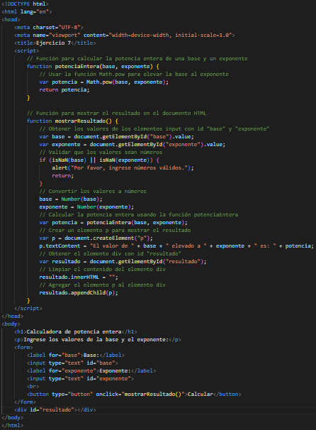

Responda cada una de las siguientes preguntas:
- ¿Que significa elegir numero "al azar"?
R= Elegir un número al azar significa seleccionar un número de un conjunto de posibles valores,
sin que haya ningún criterio o preferencia que influya en la elección.
Es decir, todos los números tienen la misma probabilidad de ser elegidos.
- ¿Porque es util la funcion Math.random para simular juegos de probabilidad?
R= La función Math.random es útil para simular juegos de probabilidad porque permite
generar números aleatorios que representan los posibles resultados de un evento.
- ¿Porque es a menudo necesario escalar y/o desplazar los valores producidos por Math.random?
R= Es a menudo necesario escalar y/o desplazar los valores producidos por Math.random
porque esta función genera números aleatorios entre 0 y 1, que pueden ser muy pequeños o no adecuados para el rango deseado.
- ¿Porque es la simulacion computarizada de situaciones reales una tecnica util?
R= Por las siguientes razones:
1.- Replicar o imitar aspectos sustanciales del mundo real de una forma interactiva y segura.
2.- Comprender el comportamiento de un sistema real o evaluar nuevas estrategias para su funcionamiento.
3.- Aplicar los conocimientos y habilidades adquiridos en un contexto que simule la realidad profesional o cotidiana.
4.- Experimentar con diferentes escenarios sin correr riesgos ni incurrir en costos asociados a la implementación de cambios en un sistema real.
5.- Identificar los factores, variables y condiciones de proceso que puedan influir en la resolución de problemas o en el desarrollo de nuevos productos.
- Escriba instrucciones que asignan enteros aleatorios a la variable n en los siguientes rangos:
1 ≤ n ≤ 2
R= int n = (int) (Math.random() * 2) + 1;
1 ≤ n ≤ 100
int n = (int) (Math.random() * 100) + 1;
0 ≤ n ≤ 9
int n = (int) (Math.random() * 10);
1000 ≤ n ≤ 1112
int n = (int) (Math.random() * 113) + 1000;
-1 ≤ n ≤ 1
int n = (int) (Math.random() * 3) - 1;
-3 ≤ n ≤ 11
int n = (int) (Math.random() * 15) - 3;
- Para cada uno de los siguientes conjuntos de enteros, escriba una sola instruccion que imprima un numero al azar del conjunto
2, 4, 6, 8, 10
R= System.out.println(2 * ((int) (Math.random() * 5) + 1));
3, 5, 7, 9, 11
R= System.out.println(2 * ((int) (Math.random() * 5) + 1) + 1);
6, 10, 14, 18, 22
R= System.out.println(4 * ((int) (Math.random() * 5) + 1) + 2);
- Escriba una funcion llamada potenciaEntera (base, exponente) que devuelva el valor de baseExponente
